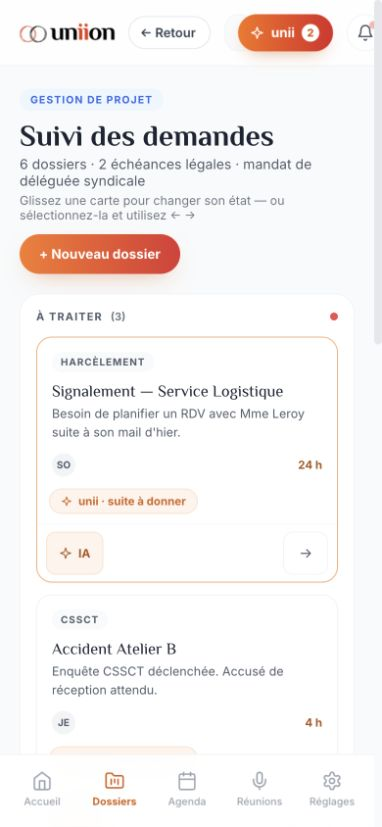
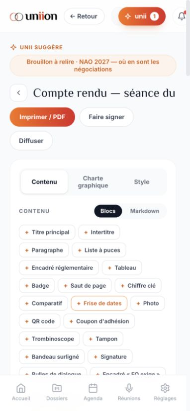
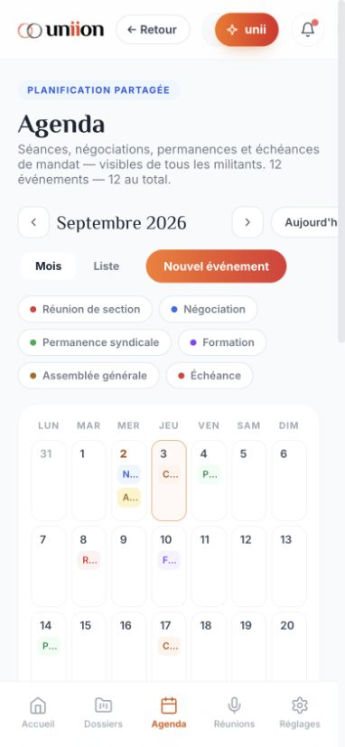
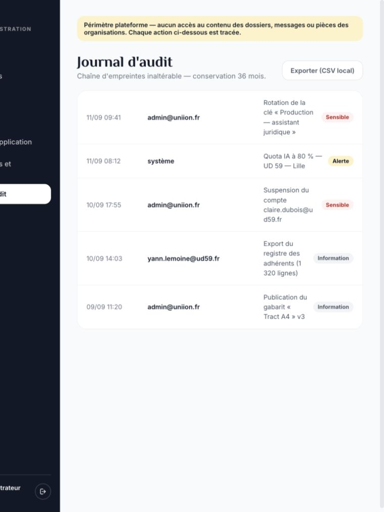
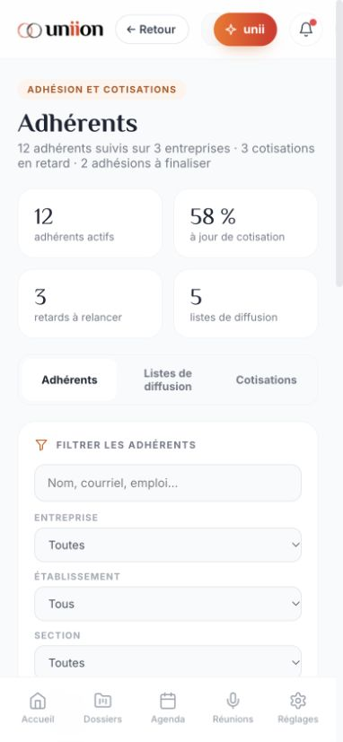
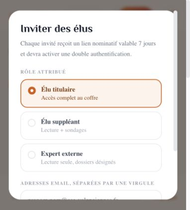

24 octobre 2026
Le prototype n’est pas entièrement responsive, et sa disposition mobile ne constitue pas encore une UX adaptée sur tous les parcours.
26 écrans/états, 104 relevés aux largeurs 360, 390, 768 et 1024 px. Aucun changement de l’application.
Audit ciblé, pas validation exhaustive des 87 sections. Dimensions de navigateur, pas appareils physiques. Débordements de texte volontairement tronqué et contrôles invisibles ne comptent pas automatiquement comme anomalies. Une mesure Accueil à 390 a conservé transitoirement 352 px utiles : exclue des conclusions chiffrées.
Sur plusieurs écrans à 390 px, l’en-tête occupe 419 à 444 px pour une zone utile de 382 px : boutons à droite partiellement hors écran.
Adaptation proposée : Corriger les contraintes de largeur ; compacter les actions et réserver un accès clair à la recherche.

Le nom de la discussion se comprime au profit des boutons. À 390 × 430, saisie et bouton Envoyer mesurés vers y=642 : hors de la zone visible. La hauteur minimale de la messagerie est 560 px.
Adaptation proposée : Prioriser le titre et la saisie ; adapter la hauteur au viewport disponible ; déplacer les actions secondaires dans un menu.
Le document testé impose environ 2 775 px de défilement avant l’aperçu. Aperçu débordant : largeur interne de 440 px dans une zone de 308 px ; nombreuses petites commandes de blocs.
Adaptation proposée : Sur mobile, alterner Éditer / Aperçu, proposer un zoom Ajuster à la largeur et regrouper les outils secondaires.

Bouton Aujourd’hui tronqué ; intitulés du calendrier mensuel très abrégés. Nouvel événement apparaît vers y=1 128 sans être amené dans le champ visible.
Adaptation proposée : Corriger la barre de commandes ; amener le formulaire au focus. Arbitrer une vue Liste par défaut sur téléphone, la vue Mois restant disponible.

Contrôle précédent : coque totale d’environ 908 px, panneau principal de 640 px et barre latérale de 268 px. Accessible en défilement horizontal mais inadapté au téléphone.
Adaptation proposée : Prévoir un menu repliable et une présentation des informations adaptée à la largeur ; conserver les mêmes fonctions et l’identité visuelle.

Historique et création de conversation occupent le premier écran avant la zone de conversation. Plusieurs commandes compactes.
Adaptation proposée : Donner la priorité à la conversation et à la saisie ; ouvrir l’historique à la demande.
Indicateurs et filtres empilés repoussent la liste ; certains titres documentaires sont fortement tronqués.
Adaptation proposée : Filtres repliables et recherche prioritaire, titres sur plusieurs lignes, actions secondaires regroupées.

La barre mobile expose seulement cinq modules. Messages, Assistant et Documents nécessitent notamment un retour à l’accueil. Des boutons secondaires mesurés sous 36 px de haut demandent une revue au doigt.
Adaptation proposée : Arbitrer les destinations prioritaires et un accès à tous les modules ; agrandir les zones tactiles sans nécessairement agrandir les icônes.
La fenêtre d’invitation reste dans la largeur, mais ses champs et boutons nécessitent un défilement en faible hauteur. Le formulaire agenda est intégré à la page, ce n’est pas une modale.
Adaptation proposée : Tester focus, défilement, fermeture et saisie avec clavier réel iOS/Android. La hauteur 430 px n’est qu’un test de contrainte, pas une émulation du clavier.

Conserver palette, typographies, contenus et logique métier. Adapter disposition, accès aux actions, densité et navigation sur téléphone ; figer ensuite ces variantes mobiles comme référence avant développement final.
Les validations précédentes de fonctions et d’impression restent valables dans leur périmètre. Elles ne valent pas validation de l’ergonomie mobile.